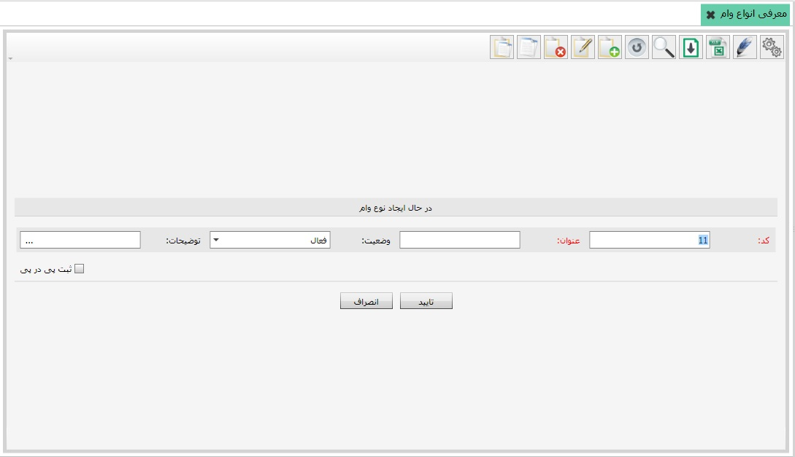

اگر بخواهید برای کارمندان از سیستم حقوق و دستمزد پرداخت وام داشته باشید، ابتدا از منوی «معرفی انواع وام»، نوع وام مورد نظرتان را معرفی نمایید. برای تعریف وام جدید از نوار ابزار بالای جدول گزینه اضافه را انتخاب کنید تا فرم ایجاد نوع وام نمایش داده شود:
همانند فرم ایجاد نوع بیمه، در این فرم هم چهار فیلد قرار داده شده است. فیلد کد به صورت خودکار پر شده است، می توانید آن را به دلخواه تغییر دهید اما دقت داشته باشید که کد وارد شده نباید تکراری باشد و پس از تایید فرم قابل ویرایش نمی باشد. یک عنوان برای وام مورد نظرتان وارد کنید، وضعیت را در حالت فعال قرار داده و فرم را تایید نمایید. نوع وام جدید ایجاد شده و در لیست انواع وام نمایش داده می شود.